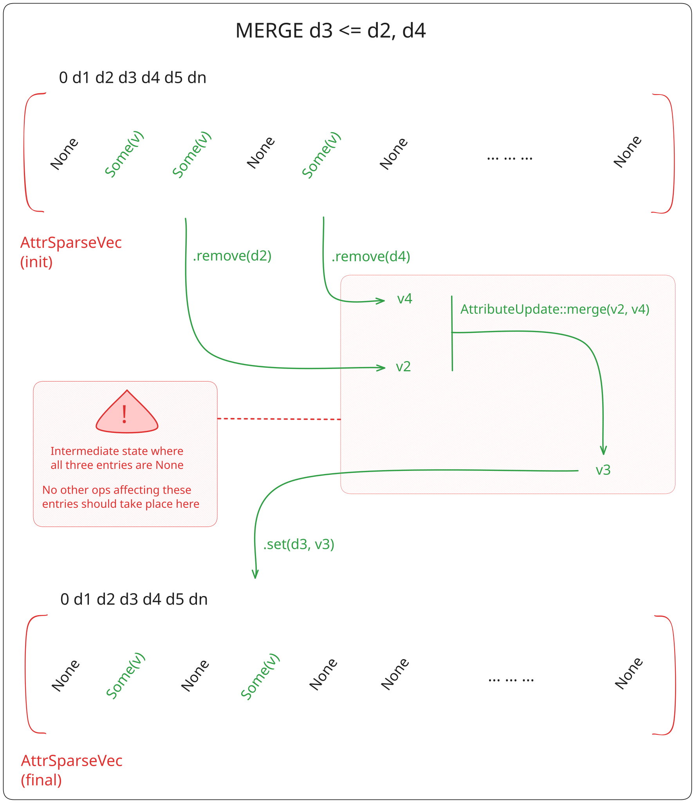

The transactional memory model
Our model
Due to Rust's ownership semantics, using our map structures in parallel require the addition of synchronization mechanism to the structure. While using primitives such as atomics and mutexes would be enough to get programs to compile, they would yield an incorrect implementation with undefined behaviors. This is due to the scope of the operations defined on a map, for example, the following operation is executed on all affected attributes of a sew:

To ensure our operators do not affect the integrity of the data structure, we use Software Transactional Memory (STM) to handle high-level synchronization of the structure.
Example: Vertex relaxation to neighbors' average
In the following routine, we shift each vertex that's not on a boundary to the average of its neighbors posisitions. In this case, transactions allow us to ensure we won't compute a new position from a value that has been replaced since the start of the computation.
Code
use honeycomb_core::{
prelude::{
CMap2, CMapBuilder, DartIdType, Orbit2, OrbitPolicy,
Vertex2, VertexIdType, NULL_DART_ID,
},
stm::atomically,
};
use rayon::prelude::*;
const SIZE: usize = 256;
const N_ROUNDS: usize = 100;
fn main() {
// generate a simple grid as input
let map: CMap2<f64> = CMapBuilder::unit_triangles(SIZE).build().unwrap();
// fetch all vertices that are not on the boundary of the map
let nodes: Vec<(VertexIdType, Vec<VertexIdType>)> = map
.fetch_vertices()
.identifiers
.into_iter()
.filter_map(|v| {
// the condition detects if we're on the boundary
if Orbit2::new(&map, OrbitPolicy::Vertex, v as DartIdType)
.any(|d| map.beta::<2>(d) == NULL_DART_ID)
{
None
} else {
// the orbit transformation yields neighbor IDs
Some((
v,
Orbit2::new(&map, OrbitPolicy::Vertex, v as DartIdType)
.map(|d| map.vertex_id(map.beta::<2>(d)))
.collect(),
))
}
})
.collect();
// main loop
let mut round = 0;
loop {
// process nodes in parallel
nodes.par_iter().for_each(|(vid, neigh)| {
// we need a transaction here to avoid UBs, since there's
// no guarantee we won't process neighbor nodes concurrently
atomically(|trans| {
let mut new_val = Vertex2::default();
for v in neigh {
let vertex = map.read_vertex(trans, *v)?.unwrap();
new_val.0 += vertex.0;
new_val.1 += vertex.1;
}
new_val.0 /= neigh.len() as f64;
new_val.1 /= neigh.len() as f64;
map.write_vertex(trans, *vid, new_val)
});
// the transaction will ensure that we do not validate an operation
// where inputs changed due to instruction interleaving between threads
// here, it will retry the transaction until it can be validated
});
round += 1;
if round >= N_ROUNDS {
break;
}
}
std::hint::black_box(map);
}
Breakdown
The main map structure, CMap2, can be edited in parallel using transactions to ensure algorithm
correctness.
The implementation isn't bound to a parallelization framework. In our example, we use the rayon
crate for convenience, but we could very well dispatch work using std::thread items, or roll out
our own thread pool implementation.
In the main computation loop, we use a transaction to ensure each new vertex value is computed from
the current neighbor's values. The errors generated by read_vertex and write_vertex are used to
detect any changes to the data used in the transaction, here, the list of neigh vertices.
Note that we use the default control flow in case of transaction failure here. Essentially, the
transaction will be re-attempted until its changes can be committed. The user can opt out of the
retry loop and cancel the operation using the Transaction::with_control function. It is possible
to introduce more nuance to the control flow, using StmError to differentiate failure from an
explicit retry call.